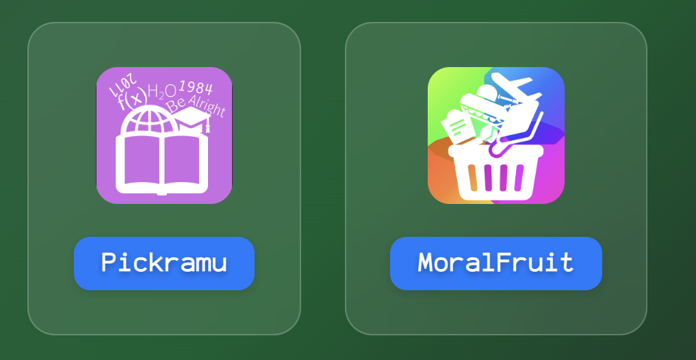
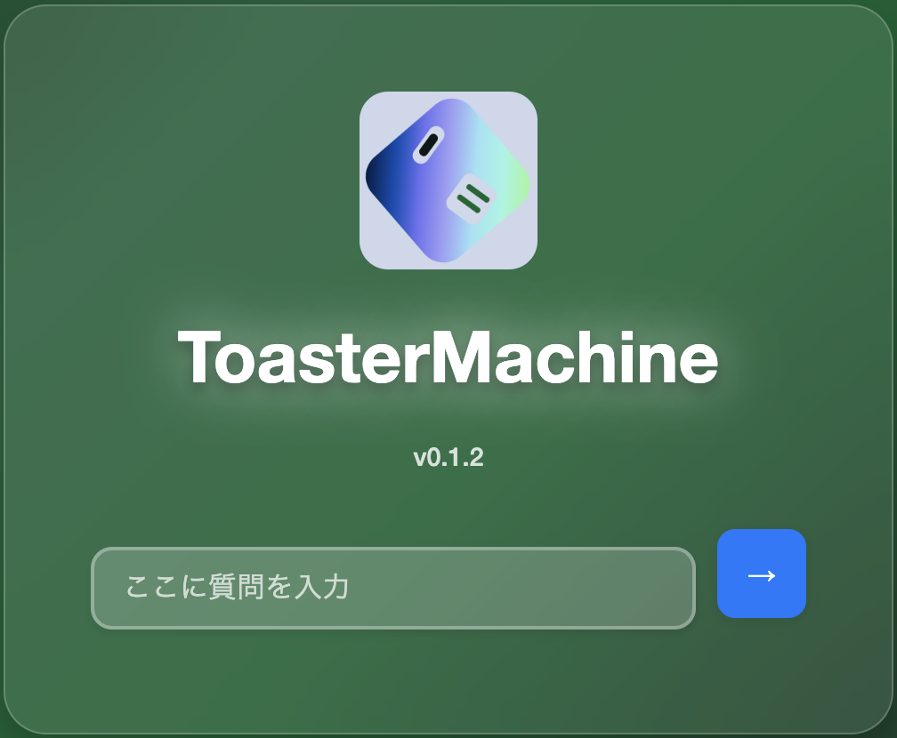

Deep-Schoolの特徴
あなたの学習体験を変える、
革新的な機能をご紹介します。
デザインをじっくり。
いつも見慣れた黒板のような、見やすく、直感的で統一されたインターフェイスに仕上げました。
SCRで学びを共有
SCRというアプリを使えば、同じ学校の人に、勉強に関することを相談できます。
チャット形式なので、恥ずかしがらずになんでも聞くことができます。
学びのアプリセット

Pickramuではたくさんのワークを、いつでも好きなタイミングで。
MoralFruitではAI相手に道徳の授業を。
学びのための専用アプリを活用できるのはDeep-Schoolだけです。
ToasterMachineで進化

ToasterMachineがあなたの学びをサポート。わからないことの相談、対話演習、ワークのサポートなど、Deep-School上のすべてのアプリと連携して、これまでにない学習体験を提供します。
安全な学習環境
SCRでは、人とのやりとりがある以上、トラブルが発生する懸念がありました。
そこで、私たちは、SCRに、先進的な安全保護機能を導入し、投稿を管理した上、学びを進める仕組みにしました。
そして、ToasterMachineは、AIなので、間違えてしまうことがあるでしょう。
しかし、間違える確率を減らすことはできるでしょう。
そこで、AI用のファクトチェッカーをToasterMachineのコアシステムに導入しました。
安全保護機能たちによって、Deep-Schoolでは、安全に学ぶことができるようになります。